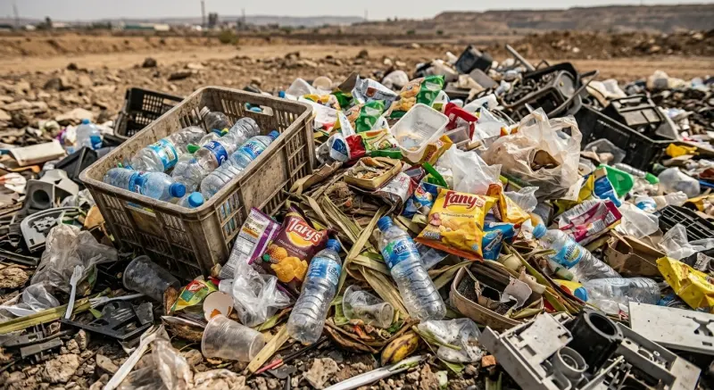
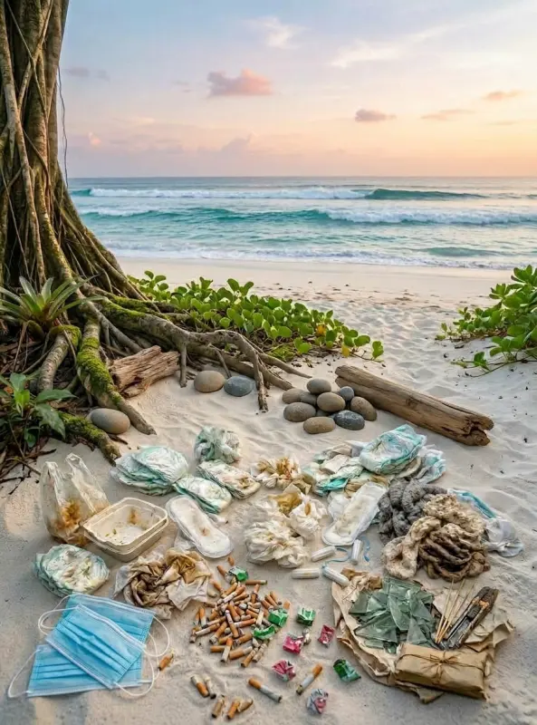

Pilah Sampah dengan Benar
Empat jenis utama sampah yang perlu kamu kenali beserta pengaruh dan pengolahannya.

Organik
Daun, sisa makanan, kertas
Mengurai→ Masuk kompos
Pelajari →
Anorganik
Botol, kaleng, kertas
Daur ulang→ Bank sampah
Pelajari →
B3 / Berbahaya
Baterai, lampu, obat
Beracun→ Dropbox khusus
Pelajari →
Residu
Styrofoam, tisu, pembalut
Tidak terurai→ Lingkungan TPA
Pelajari →Praktik
Langkah Praktis Hari Ini
-
✓
Pilah dari rumah
Pisahkan organik, anorganik, residu, dan B3 di tempatnya.
-
✓
Bilas kemasan
Kemasan kotor mengurangi nilai daur ulang.
-
✓
Cari bank sampah
Serahkan sampah anorganik ke bank sampah atau TPS3R terdekat.
Siap memilah?
Temukan bank sampah atau TPS terdekat dari rumahmu, atau tanya langsung ke Asisten Eling.
Catatan: Tidak semua barang dalam satu kategori bisa langsung didaur ulang. Selalu ikuti ketentuan dan fasilitas pengelolaan sampah setempat.